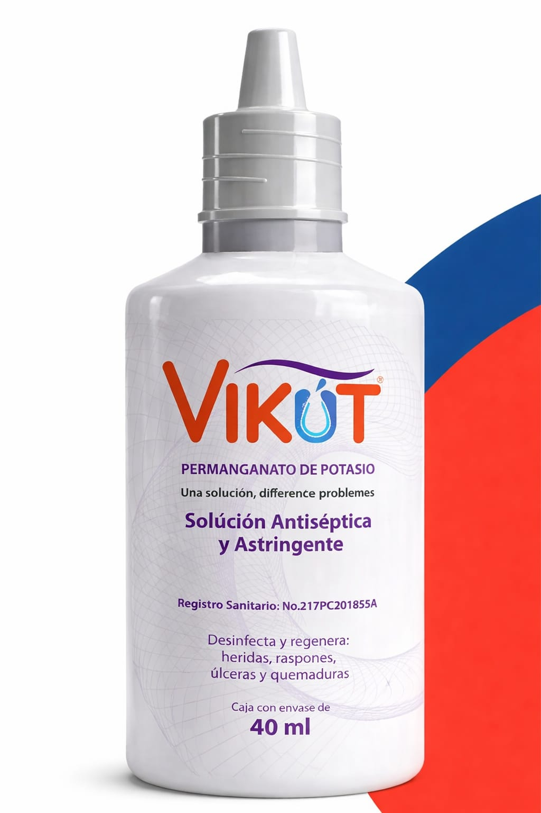
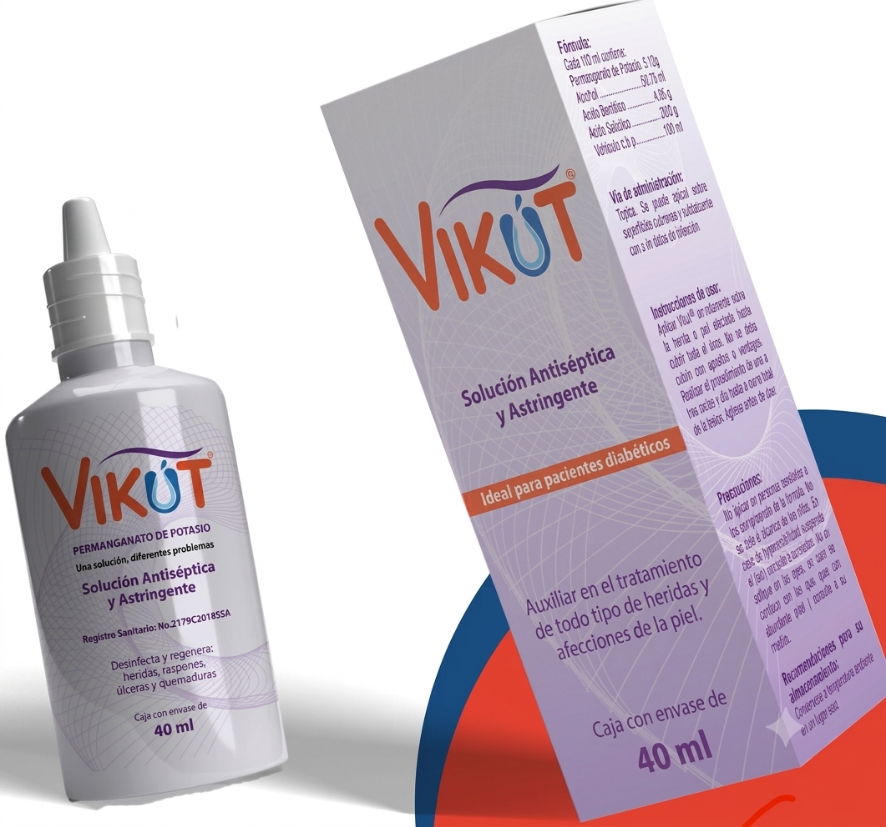
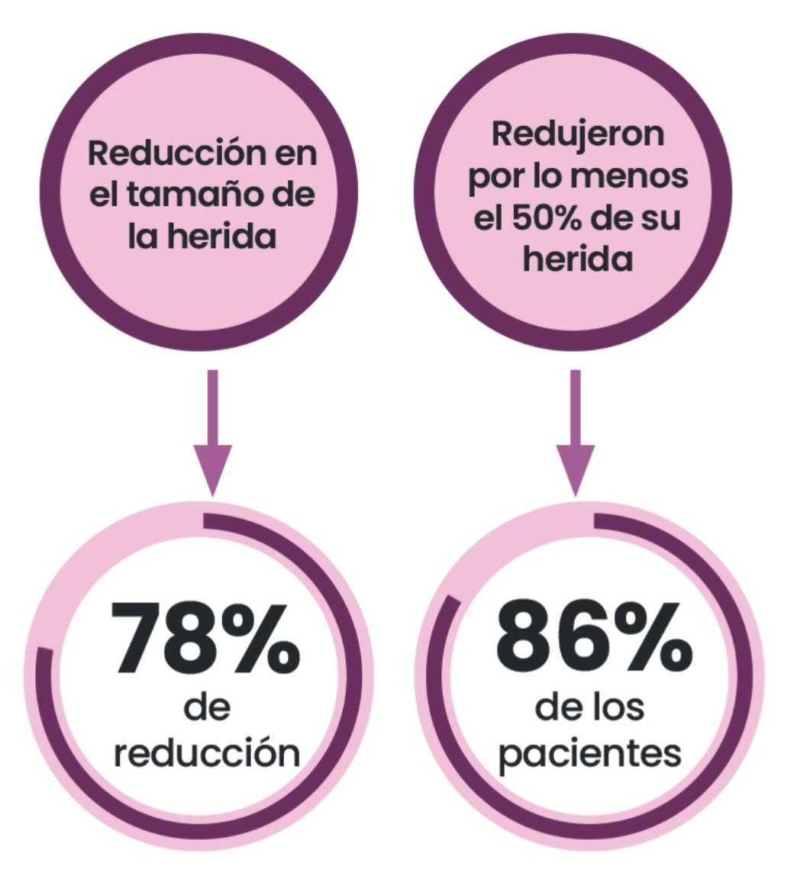
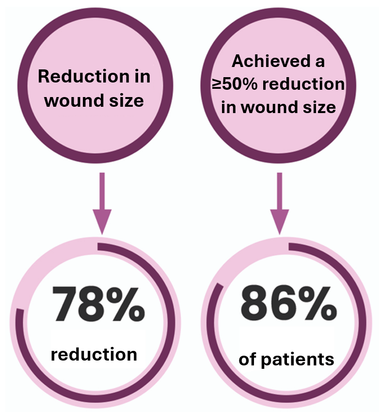

Solución antiséptica y astringente ideal para pacientes diabéticos, tratamiento de heridas superficiales y profundas, regeneración de piel.

Antiseptic and astringent solution ideal for diabetic patients. Ideal for the treatment of superficial and deep wounds and for supporting skin regeneration.

Vikút® es una solución antiséptica y astringente que ayuda a desinfectar, desinflamar, regenerar y acelerar el proceso de cicatrización en heridas superficiales y profundas.
Principalmente contiene permanganato de potasio al 5%, ácido salicílico, ácido benzoico, alcohol 960 y agua destilada, un compuesto formado por iones potasio (K*) y permanganato (Mn04).
Es un fuerte agente oxidante, lo que altera la pared celular de microorganismos patógenos, ejerciendo una actividad sobre microbacterias, hongos, virus y protozoos.
Presentación: Caja con envase de 40 ml
Antiseptic and Astringent Solution
Vikút® is an antiseptic and astringent solution that helps disinfect,
reduce inflammation, regenerate tissue, and accelerate healing process in both superficial and deep wounds.
Primarily contains 5% potassium permanganate, salicylic acid, benzoic acid, 96° alcohol,
and distilled water, a compound formed by potassium ions (K⁺) and permanganate (Mn04).
It is a strong oxidizing agent which disrupts the cell wall of pathogenic microorganisms,
providing activity against mycobacteria, fungi, viruses, and protozoa.
Presentation: Box with 40 ml bottle
Promueve la Migración de Células de reparación y limpieza.
Fortalece la Respiración Celular.
Disminuciónde la Obstrucción parcial o total de los vasos sanguíneos.
Epiteliza y cierra la piel de dentro hacia afuera.
Vikút® facilita el manejo y el cuidado de cualquier tipo de herida o infección de tejidos blandos sin importar su etiología, además:
Promotes the Migration of Repair Cells and tissue cleansing.
Strengthens cellular respiration.
Reduces partial or total Obstruction of blood vessels.
Epitelizes and closes the skin from the inside out.
Vikút® facilitates the management and care of any type of wound or infection of soft tissues regardless of its origin, and additionally:
Administración: Tópica
Dosis: Posterior al lavado con agua y jabón aplicar 1 ml de Vikút®, de 1 a 5 veces al día (según la profundidad de la herida).
Terapia en seco: No requiere apósitos ni vendajes posteriores.
Hipersensibilidad a cualquiera de los componentes.
Efectos secundarios: No reportados.
Vikút® está indicado para heridas superficiales y profundas, agudas y crónicas, con o sin infección:
Administration: Topical use
Dosage: Following cleansing with soap and water, apply 1 ml. of Vikut® one to
five times daily, according to wound depth.
Dry Therapy: No dressings or bandages required after application.
Hypersensitivity to any of the components.
Side effects: None reported.
Vikút® is indicated for superficial and deep wounds, acute or chronic, with or without infection:
Al día 21, el 86% de los pacientes del grupo experimental
redujo al menos un 50% el tamaño de sus úlceras,
mientras que solo el 40% del grupo control logró dicha reducción.
La curación total de la úlcera a las tres semanas ocurrió en
4 de los 14 pacientes del grupo experimental (29%),
mientras que ningún paciente del grupo control alcanzó ese estado.

By day 21, 86% of patients in the experimental group
had reduced their ulcer size by at least 50%,
while only 40% of the control group achieved this reduction.
Complete ulcer healing at three weeks occurred in
4 out of 14 patients in the experimental group (29%),
while none of the control group reached this healing.

Registro Sanitario No. 2179C2018 SSA
Tipo de insumo: Producto higiénico (dispositivo médico) Clase II.
Contamos con unidad de Tecnovigilancia que esta registrado en la COFEPRIS para atención
al público y a médicos las 24hrs. Nivel nacional. Con el numero 800 7160 3078.
Presentaciones aprobadas: 40ml.
Vía de administración: Tópica.
Dosis: 1 ml. por curación de 1 a 5 veces al día (depende de la profundidad y tamaño de la herida).
Clave: 060.066.1318
Genérico: Antiséptico
DUNS Number: 95-159-6655
Labeler Code: 81760
U.S. Agent/Registrant: Latin FDA Registrar
Product Trade Name: Vikút Antiseptic Solution 40 mL
Labeler: Grupo Salypro de México, S.A.de C.V.
Manufacturer: Grupo Salypro de México, S.A.de C.V.
NDCC\S Numbers: 81760-310-01
U.S. Agent: Latin FDA Registrar
Sanitary Registration No. 2179C2018 SSA
Type of product: Hygienic product (medical device), Class II.
We have a Techno-vigilance Unit registered with COFEPRIS providing support to the public and
healthcare professionals 24 hours a day, nationwide, at the number 800 7160 3078.
Presentaciones aprobadas: 40ml.
Vía de administración: Tópica.
Dosage: 1 ml per consult, 1 to 5 times a day (depending on the depth and size of the wound).
Code: 060.066.1318
Generic Name: Antiseptic
DUNS Number: 95-159-6655
Labeler Code: 81760
U.S. Agent/Registrant: Latin FDA Registrar
Product Trade Name: Vikút Antiseptic Solution 40 mL
Labeler: Grupo Salypro de México, S.A.de C.V.
Manufacturer: Grupo Salypro de México, S.A.de C.V.
NDCC\S Numbers: 81760-310-01
U.S. Agent: Latin FDA Registrar